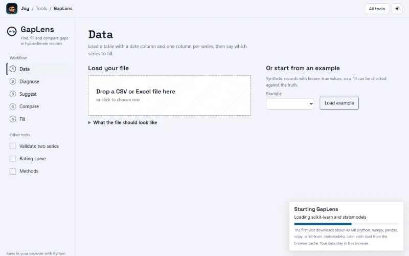
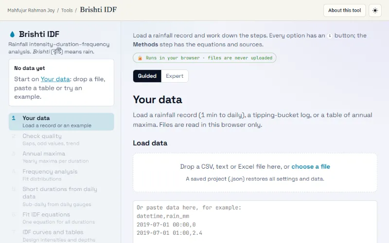
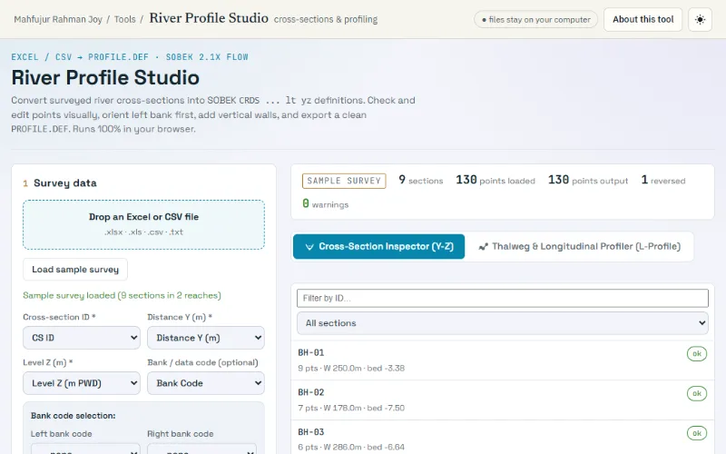
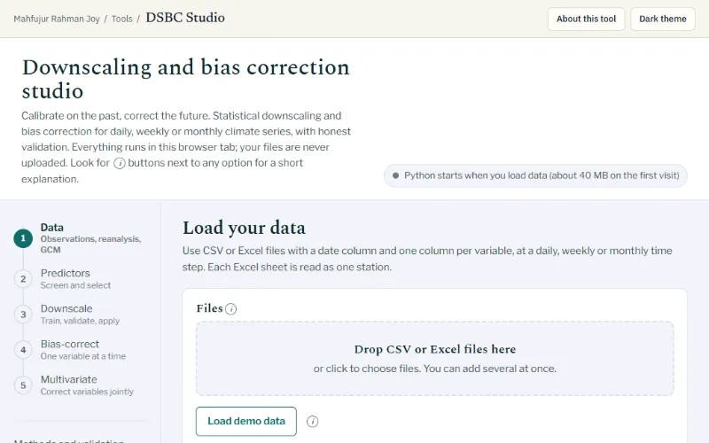

Water resources engineer · Dhaka, Bangladesh
Mahfujur Rahman Joy
Research Consultant, CEGIS · M.Sc. student, IWFM, BUET
Civil & Environmental Engineer working as a Research Consultant at CEGIS, a public trust under the Ministry of Water Resources, Bangladesh, while pursuing an M.Sc. in Water Resource Development at IWFM, BUET. I build river models, read the Earth from orbit, and use machine learning to understand floods and droughts in a changing climate.
Research areas Hydroclimatology · Drought and flood analysis · CMIP6 downscaling · Remote sensing and GIS · River morphology · Hydrological tools
3 journal articles · 2 preprints · 6 conference papers · 10 web tools
Research
Water Resources Engineer · Hydrodynamic Modeler (1D/2D) · GIS & Remote Sensing Analyst · Hydro-Climate Researcher · ML for Floods & Droughts
Hydrodynamic Modeling
1D & 2D hydrologic and hydrodynamic models (SOBEK, Delft3D, SWMM) for river basin planning and urban drainage.
GIS & Remote Sensing
Flood inundation mapping, LULC classification, river planform and erosion–accretion analysis with ArcGIS Pro & Google Earth Engine.
Climate Projection
CMIP6 statistical downscaling, bias correction (NBC, MBC, QBC), trend analysis and copula-based drought assessment.
Machine & Deep Learning
RF, SVM, KNN, LSTM and CNN models for flood susceptibility, precipitation and water-level prediction.
Publications
3 journal articles · 2 preprints · 6 conference papers. Each title opens a page with the full citation.
Journal articles
- 2026
Assessing the Reliability of Global Circulation Models in Predicting Monthly Precipitation Patterns in Bangladesh
Ahmad Hasan Nury, Abu Sadat Md. Saim, Khairul Hasan, Mahfujur Rahman Joy
H2Open Journal, 9(3), 100021 · June 2026
doi.org/10.1016/j.htopen.2026.100021Cite: Assessing the Reliability of Global Circulation Models in Predicting Monthly Precipitation Patterns in Bangladesh
- 2025
Drought prediction in Bangladesh under changing climate: Integrating SDAT-SPI and SDSM-DCBC with CMIP6 data
Ahmad Hasan Nury, Saiful Alam, Rounak Afroz, Saurov Nandi Majumdar, Shawly Deb Anti, Mahfujur Rahman Joy, Gulam Md. Munna
Environmental and Sustainability Indicators, 28, 100878 · December 2025
doi.org/10.1016/j.indic.2025.100878Cite: Drought prediction in Bangladesh under changing climate: Integrating SDAT-SPI and SDSM-DCBC with CMIP6 data
- 2025
Investigating the Trends of Rainfall and Discharge along the Brahmaputra-Jamuna River System
Raied Ahmed Nishat, Mahfujur Rahman Joy
Technical Journal, River Research Institute, 17(1)
ResearchGate: Investigating the Trends of Rainfall and Discharge along the Brahmaputra-Jamuna River System Cite: Investigating the Trends of Rainfall and Discharge along the Brahmaputra-Jamuna River System
Preprints
- 2026
Climate associated groundwater table changes and drought risk in Bangladesh under CMIP6 projections
Ahmad Hasan Nury, Abu Sadat Md. Saim, Anika Tasnim Sadia, Shaswata Roy, Gulam Md. Munna, Mahfujur Rahman Joy
SSRN preprint, posted 29 September 2026
doi.org/10.2139/ssrn.7540708Cite: Climate associated groundwater table changes and drought risk in Bangladesh under CMIP6 projections
- 2025
Hydroclimatic Trend Analysis and Machine Learning-Based Water Level Prediction for The Ganges (Padma) River Basin
Mahfujur Rahman Joy, Raied Ahmed Nishat
Authorea preprint, posted 9 September 2025
doi.org/10.22541/au.175741407.71397410/v1Cite: Hydroclimatic Trend Analysis and Machine Learning-Based Water Level Prediction for The Ganges (Padma) River Basin
Conference papers — ICCEI 2025
- 2025
Evaluation of Machine Learning Classifiers for LULC Classification Using Sentinel-2 Imagery on Google Earth Engine
Mahfujur Rahman Joy, Saifullah Mansur Akil
Proc. International Conference on Civil Engineering Research & Innovations (ICCEI), RUET, Rajshahi — Paper 514
ResearchGate: Evaluation of Machine Learning Classifiers for LULC Classification Using Sentinel-2 Imagery on Google Earth Engine Cite: Evaluation of Machine Learning Classifiers for LULC Classification Using Sentinel-2 Imagery on Google Earth Engine
- 2025
Multi-Decadal Planform Dynamics of the Transboundary Ganges River Using Landsat Imagery and GIS
Mahfujur Rahman Joy, Saifullah Mansur Akil
Proc. International Conference on Civil Engineering Research & Innovations (ICCEI), RUET, Rajshahi — Paper 518
ResearchGate: Multi-Decadal Planform Dynamics of the Transboundary Ganges River Using Landsat Imagery and GIS Cite: Multi-Decadal Planform Dynamics of the Transboundary Ganges River Using Landsat Imagery and GIS
- 2025
Spatio-Temporal Dynamics of Erosion and Accretion in the Jamuna River System Using Satellite Imagery and GEE
Saifullah Mansur Akil, Mahfujur Rahman Joy, Gulam Md. Munna
Proc. International Conference on Civil Engineering Research & Innovations (ICCEI), RUET, Rajshahi — Paper 1014
ResearchGate: Spatio-Temporal Dynamics of Erosion and Accretion in the Jamuna River System Using Satellite Imagery and GEE Cite: Spatio-Temporal Dynamics of Erosion and Accretion in the Jamuna River System Using Satellite Imagery and GEE
- 2025
Integrating Geospatial Techniques and the MCDA Approach for Landfill Site Suitability Mapping in Rajshahi District, Bangladesh
Saifullah Mansur Akil, Mahfujur Rahman Joy, Gulam Md. Munna
Proc. International Conference on Civil Engineering Research & Innovations (ICCEI), RUET, Rajshahi — Paper 1011
ResearchGate: Integrating Geospatial Techniques and the MCDA Approach for Landfill Site Suitability Mapping in Rajshahi District, Bangladesh Cite: Integrating Geospatial Techniques and the MCDA Approach for Landfill Site Suitability Mapping in Rajshahi District, Bangladesh
- 2025
Clustering Earthquake Activity in South Asia Using Advanced Techniques
Mahfujur Rahman Joy
Proc. International Conference on Civil Engineering Research & Innovations (ICCEI), RUET, Rajshahi — Paper 266
ResearchGate: Clustering Earthquake Activity in South Asia Using Advanced Techniques Cite: Clustering Earthquake Activity in South Asia Using Advanced Techniques
- 2025
Bivariate GIS-Based Risk Mapping of Earthquake Hazard and Population Vulnerability in Bangladesh
Mahfujur Rahman Joy
Proc. International Conference on Civil Engineering Research & Innovations (ICCEI), RUET, Rajshahi — Paper 268
ResearchGate: Bivariate GIS-Based Risk Mapping of Earthquake Hazard and Population Vulnerability in Bangladesh Cite: Bivariate GIS-Based Risk Mapping of Earthquake Hazard and Population Vulnerability in Bangladesh
Tools
10 hydrology tools that run in the browser. Free to use; files are processed on your computer and never uploaded.
Data preparation

GapLens
Find, fill & compare gaps in hydroclimate records
Beta

Hydro-Series Toolkit
Min, max and average statistics, and a series generator, for any time series
Stable
Open tool: Hydro-Series ToolkitAbout & methods: Hydro-Series Toolkit
Analysis

OpenFFA
Flood frequency analysis, validated against Bulletin 17C
Stable
Open tool: OpenFFAAbout & methods: OpenFFAValidation: OpenFFACite: OpenFFA

Brishti IDF
Brishti (বৃষ্টি) means rain in Bangla
Rainfall IDF curves with every method under your control
Stable
Open tool: Brishti IDFAbout & methods: Brishti IDFValidation: Brishti IDFCite: Brishti IDF
Dependability Analyzer
Dependable water level, flow & rainfall for reports
Stable
Open tool: Dependability AnalyzerAbout & methods: Dependability Analyzer

Composite CN Calculator
SCS curve number and runoff for every sub-catchment
Stable
Open tool: Composite CN CalculatorAbout & methods: Composite CN Calculator
Modelling & Spatial

River Profile Studio
River cross-sections, SOBEK Y-Z profiles & thalweg analysis
Stable
Open tool: River Profile StudioAbout & methods: River Profile Studio

Ababahika
Ababahika (অববাহিকা) is Bangla for catchment
Catchment slope, land cover, soil & drainage units — a GIS in your browser
Beta
Open tool: AbabahikaAbout & methods: AbabahikaValidation: AbabahikaCite: Ababahika
Hydro ML Studio
Machine learning for water level, discharge & rainfall
Stable

DSBC Studio
Downscaling & bias correction of climate data
Stable
Open tool: DSBC StudioAbout & methods: DSBC StudioValidation: DSBC Studio
Study sites
Where the projects and papers are located. Rivers and outline: Natural Earth.
Sandhya-Baleshwar River Basin Current
Integrated water resources management feasibility study — 1D/2D hydrodynamic modeling
Burishwar-Payra River Basin
Integrated water resources management feasibility study — flood, erosion, polder and estuary management
Khulna Coastal Polders (5 polders)
Five polders around the Kurulia and Shibsa rivers
North Rajshahi Irrigation Project (NRIP)
Irrigation development in the Barind tract of north Rajshahi
Cox's Bazar Watersheds
Watershed management for four watersheds: Rezu Khal, Hnila, Baruakhali and Palongkhali
Sylhet Region
Extreme floods and their impacts — remote sensing & deep learning
Feni & Southeast Floodplain
Crop damage assessment for the Aug 2024 and Jul 2025 floods
Jamuna River (Sirajganj reach)
Spatio-temporal erosion & accretion with satellite imagery and GEE
Brahmaputra-Jamuna System
Trends of rainfall and discharge
Paper: Investigating the Trends of Rainfall and Discharge along the Brahmaputra-Jamuna River System
Ganges (Padma) River
Multi-decadal planform dynamics with Landsat imagery and GIS
Papers: Multi-Decadal Planform Dynamics of the Transboundary Ganges River Using Landsat Imagery and GIS; Hydroclimatic Trend Analysis and Machine Learning-Based Water Level Prediction for The Ganges (Padma) River Basin
Rajshahi District
Landfill site suitability with GIS + MCDA
Dhaka (Zones W3 & W4)
Sewerage network design and GIS database
Experience
- Aug 2026 – presentOn-site · Dhaka
Research Consultant
Center for Environmental and Geographic Information Services (CEGIS) (Public Trust under the Ministry of Water Resources, Government of Bangladesh)
Project Feasibility Study for Integrated Water Resources Management in the Sandhya-Baleshwar River Basin
- Field reconnaissance and hydro-morphological surveying across the basin.
- Catchment delineation and spatial basin characterization with GIS and remote sensing data.
- Developing, calibrating and validating 1D & 2D hydrologic and hydrodynamic mathematical models.
- Preparing technical maps and feasibility reports.
Software: SOBEK · Delft3D · ArcGIS Pro · GEE
- Jun 2026 – Jul 20262 mos · On-site · Dhaka
Jr. Design Engineer
CCECC — China Civil Engineering Construction Corporation
Project Design & Build Contract for Reconstruction / New Construction / Rehabilitation of Sewerage Networks, Zone W3 & W4 (Arambagh, Paltan, Shahidbag, Motijheel) — Package WD5B
- Managed the GIS database for urban sewerage infrastructure.
- Designed sewer networks and hydraulic alignments.
- CAD operations, engineering maps and project reports.
Software: AutoCAD · ArcGIS · MS Office
- Dec 2025 – May 20266 mos · Hybrid · Sylhet
GIS and Environmental Officer
SUST Research Center, Shahjalal University of Science and Technology
Project Understanding Extreme Floods and Their Impact in the Sylhet Region: A Probabilistic Deep Learning Approach (PS/2025/1/38)
PI: Prof. Dr. Khalidur Rahman, Dept. of Statistics, SUST
- Satellite image acquisition, preprocessing and spatial data curation.
- Computed indices including NDVI, NDWI, TWI and TPI.
- Trained and tested RF, SVM, LSTM and CNN models for flood analysis.
- Map generation and reporting.
Software: ArcGIS Pro · GEE · Google Colab · Python
- Jul 2025 – Nov 20255 mos · Hybrid · Gazipur
RS & GIS Analyst
Agromet Lab, Bangladesh Rice Research Institute (BRRI)
Project Damage Assessment of Crops using Remote Sensing and GIS during the August 2024 and July 2025 Floods
PI: Dr. Niaz Md. Farhat Rahman, Agromet Lab, BRRI
- Field surveying, satellite image acquisition and preprocessing.
- Flood inundation mapping and supervised LULC classification.
- Trained ML classifiers on ground sample points (KNN, RF, SVR, MD, NB).
- Crop damage maps, reports and a journal manuscript.
Software: ArcGIS Pro · GEE · Python · Excel
- Aug 2024 – Nov 20251 yr 4 mos · On-site · Sylhet
Research Assistant
Dept. of Civil & Environmental Engineering, SUST (Water Resource & Environment Division)
Project Hydro-climatic modeling, CMIP6 statistical downscaling & copula-based drought analysis
Supervisor: Prof. Dr. Ahmad Hasan Nury, Dept. of CEE, SUST
- Collected and preprocessed station, GCM and reanalysis data (missing values, outliers).
- Statistical downscaling and bias correction (NBC, MBC, QBC).
- Planform analysis, trend analysis and uni/bi/multivariate copulas.
- Predictive modeling with machine and deep learning; reporting and journal publication.
Software: Python · JavaScript · QGIS · SWMM · GEE
Education
- April 2026 session (classes from Oct 2026)ongoing
M.Sc. in Water Resource Development
Institute of Water and Flood Management (IWFM), Bangladesh University of Engineering and Technology (BUET), Dhaka
Integrated water resources management, river basin development and hydrodynamic modeling.
- Feb 2020 – Jul 2025
B.Sc. (Engg.) in Civil & Environmental Engineering
Shahjalal University of Science and Technology (SUST), Sylhet
Water Resources & Environmental Engineering. Undergraduate research on CMIP6 downscaling, soil moisture projection and drought.
Earlier Higher Secondary Certificate (Science), Hamdard Public College (2017 – 2019); Secondary School Certificate (Science), Rajdhani High School (2017).
Certifications and training
- Geospatial Data Analysis and Management (Intermediate)Esri & EDGE, Apr – May 2026
- Big Data Analysis for Water Related ApplicationsUNU-INWEH, Mar 2026 · ID eda202eb1db04a99b01c6b6c66801e5a
- Remote Sensing and GIS in Climate and Water ManagementBUET, May 2025
- Getting Started with Imagery and Remote SensingEsri, Apr – May 2025 · ID 6834612eb653abf18e3a67b5
- Python Programming and Basic Data ScienceICT Division, Bangladesh, Dec 2024 – May 2025 · ID EDGE-DSTS-126-8826-00016
- Going Places with Spatial AnalysisEsri, Jan – Mar 2025 · ID 6754afca58d5e000133f6ef3
- Data Analysis with PythonfreeCodeCamp, May – Jun 2024 · ID mahfujurrahmanjoy-dawp
- Geospatial Data Analysis with ChatGPT and Google Earth EngineUNU-INWEH, Apr – May 2024 · ID ce28690d389c48a6ba3845560d75d44c
Skills
- GIS & Remote Sensing
- ArcGIS Pro · QGIS · Google Earth Engine · Sentinel-2 & Landsat imagery · Flood inundation mapping · Land-cover classification · River planform & erosion analysis · MCDA site suitability
- Hydrodynamic Modeling
- SOBEK 1D/2D · Delft3D · EPA SWMM · Calibration & validation
- Climate & Hydro-Statistics
- CMIP6 statistical downscaling · Bias correction (NBC, MBC, QBC) · Flood & rainfall frequency analysis · Copula drought analysis · Trend tests (Mann–Kendall, Sen's slope)
- Machine Learning & Coding
- Python · JavaScript · Random forest, SVM, KNN · LSTM & CNN deep learning · Browser-based analysis tools
- Engineering Design
- AutoCAD · ETABS · Sewer network design
Leadership and service
- IT Secretary, Association of Civil & Environmental Engineering (ACEE), SUST · SylhetMar 2024 – Jul 2025
- Assistant IT Secretary, ACEE, SUST · SylhetApr 2023 – Mar 2024
- Campus Leader, BongoDev · RemoteJan 2023 – Jun 2024
- Campus Ambassador, Construct Carnival 1.0, KUET · RemoteMay 2024
- Publication & IT Management, ExCEEd 2.0 · SylhetMar 2023
- Management, CEE SUST Silver Jubilee Celebration & Reunion · SylhetMar 2023
- Vice President, HPC Science Club, Hamdard Public College · DhakaMar 2018 – Mar 2019
References
- Dr. Ahmad Hasan NuryProfessor, Dept. of Civil & Environmental EngineeringShahjalal University of Science and Technology
- Dr. Khalidur RahmanProfessor, Dept. of StatisticsShahjalal University of Science and Technology
- Dr. Niaz Md. Farhat RahmanPrincipal Scientific Officer, Agromet LabBangladesh Rice Research Institute
Contact details available on request.
Contact
Open to research collaboration & graduate opportunities.
- Work email
- mrjoy@cegisbd.com
- Location
- Dhaka, Bangladesh
- Profiles
- Google Scholar · ORCID · ResearchGate · GitHub · LinkedIn